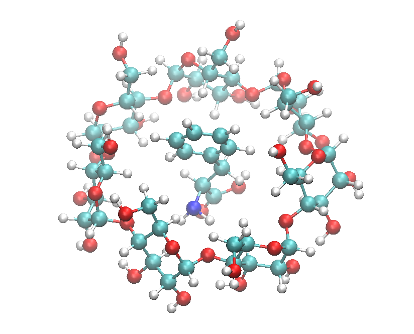

Gromacs example output¶
This page provide an example of FF conversion for Gromacs.

Conversion of organic molecules
Consider a molecular system consists of phenylalanine enclosed in a \(\beta\)-cyclodextrin (structure shown below) and solvates the whole system with ethanol in a cubic box of size 80 Å. All H-containing bonds are also constrained.
{kind=link}
The corresponding confirguration file (in xyz format) is shown below. The molecular system is separated into two Molecular Groups: CYC refers the cyclodextrin cage and PHE for the organic molecule enclosed within the cage.
170
Cyclodextrin with PHE.
# MOLECULAR_GROUP CYC
C -6.049000 0.945000 0.569000
C -6.341000 2.134000 -0.313000
C -5.113000 3.000000 -0.453000
C -4.574000 3.388000 0.915000
C -4.429000 2.153000 1.811000
C -4.114000 2.550000 3.250000
C -4.381000 -3.897000 -0.680000
C -5.277000 -3.152000 -1.645000
C -5.119000 -1.651000 -1.519000
C -5.285000 -1.237000 -0.064000
…
…
H -2.830000 6.347000 -2.095000
H 0.359000 5.982000 -1.647000
H 0.509000 6.438000 4.356000
# MOLECULAR_GROUP PHE
C -0.830000 0.683000 2.322000
C -0.114000 -0.185000 3.052000
C 0.873000 -0.882000 2.472000
…
…
To carry out this conversion, below highlights the relevant options in a DL_FIELD control file.
DL_FIELD control file for cyclodextrin-phe.
1 * Construct DL_POLY output files
gromacs * Seconday output files (gromacs, chemshell or none).
opls2005 * Type of force field require (see list below for choices).
kcal/mol * Energy unit: kcal/mol, kJ/mol, eV, or K.
normal * Conversion criteria (strict, normal, loose)
1 * Bond type (0=default, 1=harmonic , 2=Morse)
1 * Angle type (0=default, 1=harmonic, 2=harmonic cos)
none * Include user-defined information. Put 'none' or a .udff filename
1 * Verbosity mode: 1 = on, 0 = off
cyclodextrin_phe.xyz * Configuration file.
none * Output file in PDB. Put 'none' if not needed.
0 40 molecules 9.0 * Solution Maker: on/off, density, unit, cutoff)
…
…
1 * Constrain bonds? 1 = Yes (see below) 0 = No
…
…
1 * Periodic condition ? 0=no, other number = type of box (see below)
80.0 0.0 0.0 * Cell vector a (x, y, z)
0.0 80.0 0.0 * Cell vector b (x, y, z)
0.0 0.0 80.0 * Cell vector c (x, y, z)
default * 1-4 scaling for coulombic (put default or x for scaling=x)
default * 1-4 scaling for vdw (put default or x for scaling=x)
0 300.0 * Include velocity? 1=yes, 0=no and scaling temperature.
1 * Position solute at origin? 1 = yes, 0=no
etoh 2.0 default * Solvate model? none or specify solvent (see below) and distance criteria.
…
…
########################################################
Atom state specification: type Molecular_Group filter [value]
CONSTRAIN PHE h-bond
CONSTRAIN CYC h-bond
#########################################################
After conversion, DL_FIELD will produce three itp files, one for each Molecular Group: one for CYC, one for PHE and the other for ethanol solvent (ETOH). They are all included in the gromacs.top as follows:
;
; Gromacs system topology (top) file.
; Produced from DL_FIELD v4.11
;
[ defaults ]
; nbfunc comb-rule gen-pairs fudgeLJ fudgeQQ
1 1 no 0.500000 0.500000
[ atomtypes ]
; atom_type at.num mass charge ptype c6 c12
CAO 6 12.01150 0.000 A 2.030504e-03 3.732606e-06
CT 6 12.01150 0.000 A 2.030504e-03 3.732606e-06
OAL 8 15.99940 0.000 A 2.624389e-03 2.420782e-06
OAS 8 15.99940 0.000 A 1.393695e-03 8.290022e-07
OS 8 15.99940 0.000 A 1.393695e-03 8.290022e-07
HC 1 1.00797 0.000 A 1.225781e-04 2.992630e-08
HO 1 1.00797 0.000 A 7.845000e-09 1.225781e-16
CA 6 12.01150 0.000 A 2.344876e-03 4.693426e-06
HA 1 1.00797 0.000 A 1.008475e-04 2.025617e-08
CT1 6 12.01150 0.000 A 2.030504e-03 3.732606e-06
C 6 12.01150 0.000 A 4.886845e-03 1.358990e-05
NT 7 14.00670 0.000 A 3.674381e-03 4.745346e-06
O 8 15.99940 0.000 A 2.363857e-03 1.589906e-06
OH 8 15.99940 0.000 A 2.074092e-03 1.512013e-06
H 1 1.00797 0.000 A 7.845000e-09 1.225781e-16
#include "gromacs1.itp"
#include "gromacs2.itp"
#include "gromacs3.itp"
[ system ]
; Title
Control file, for version 4.11
; System composition
[ molecules ]
; Molecular_group species #
CYC 1
PHE 1
ETOH 5212
The file shows an additional 5212 ethanol molecules have been added as solvent in the system.